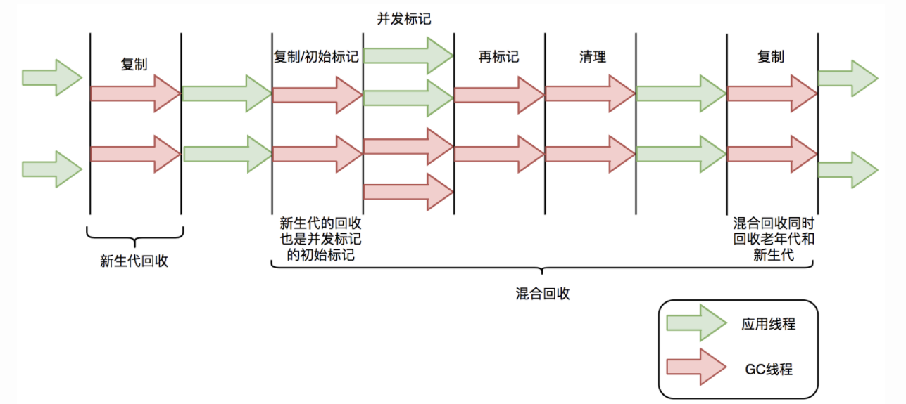
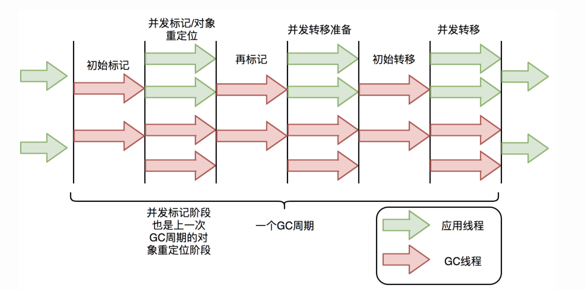
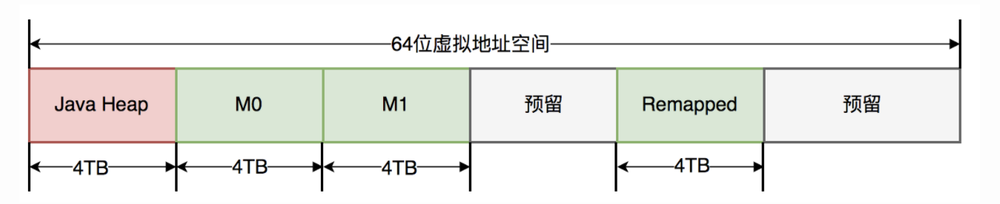

JDK版本特性梳理
主要介绍两个长版本JDK11以及从JDK8以后的一些特别的特性
JDK8
1、Date
JDK7 Date缺点
1、所有的日期类都是可变的，因此他们都不是线程安全的，这是Java日期类最大的问题之一。
2、Java的日期/时间类的定义并不一致，在java.util和java.sql的包中都有日期类，此外 用于格式化和解析的类在java.text包中定义。
3、java.util.Date同时包含日期和时间，而java.sql.Date仅包含日期，将其纳入java.sql 包并不合理。另外这两个类都有相同的名字，这本身就是一个非常糟糕的设计。对于时间、时间戳、 格式化以及解析，并没有一些明确定义的类。对于格式化和解析的需求，我们有java.text.DateFormat 抽象类，但通常情况下，SimpleDateFormat类被用于此类需求
4、日期类并不提供国际化，没有时区支持，因此Java引入了java.util.Calendar和 java.util.TimeZone类，但他们同样存在上述所有的问题
JDK8 Date优势
1、不变性：新的日期/时间API中，所有的类都是不可变的，这对多线程环境有好处。
2、关注点分离：新的API将人可读的日期时间和机器时间（unix timestamp）明确分离，它为日期（Date）、 时间（Time）、日期时间（DateTime）、时间戳（unix timestamp）以及时区定义了不同的类。
3、清晰：在所有的类中，方法都被明确定义用以完成相同的行为。举个例子，要拿到当前实例我们可以使用now() 方法，在所有的类中都定义了format()和parse()方法，而不是像以前那样专门有一个独立的类。为了更好的处理问 题，所有的类都使用了工厂模式和策略模式，一旦你使用了其中某个类的方法，与其他类协同工作并不困难。
4、实用操作：所有新的日期/时间API类都实现了一系列方法用以完成通用的任务，如：加、减、格式化、 解析、从日期/时间中提取单独部分，等等。
5、可扩展性：新的日期/时间API是工作在ISO-8601日历系统上的，但我们也可以将其应用在非IOS的日历上。
JDK8 Date新增字段
Java.time包中的是类是不可变且线程安全的。新的时间及日期API位于java.time中，java8 time包下关键字段解读。
属性含义Instant 代表的是时间戳LocalDate 代表日期，比如2020-01-14LocalTime 代表时刻，比如12:59:59LocalDateTime 代表具体时间 2020-01-12 12:22:26ZonedDateTime 代表一个包含时区的完整的日期时间，偏移量是以UTC/ 格林威治时间为基准的Period 代表时间段ZoneOffset 代表时区偏移量，比如：+8:00Clock 代表时钟，比如获取目前美国纽约的时间获取当前时间1
2
3
4
5Instant instant = Instant.now(); //获取当前时间戳
LocalDate localDate = LocalDate.now(); //获取当前日期
LocalTime localTime = LocalTime.now(); //获取当前时刻
LocalDateTime localDateTime = LocalDateTime.now(); //获取当前具体时间
ZonedDateTime zonedDateTime = ZonedDateTime.now(); //获取带有时区的时间
JDK9
1、String 底层结构类型都是char[]， 替换为byte[] 数组，节省了空间和提高性能。
之前最小单位一直是一个char，占2个字节，也就是两个byte，但是JDK8是基于latin1的，而该编码可以用1个byte标识，所以当数据明明可以用到一个byte，却使用了1个char 即两个byte，多出了一个byte空间。
JDK9基于ISO\latin1\UTF-16，latin1和ISO用一个byte标识，UTF-16两个byte标识，JDK9会自动识别用哪个编码，当数据用1byte，就会使用ISO或者latin1,当数据满2个byte时，自动使用UTF-16.
同理：StringBuilder、StringBuffer也更换了底层数据结构
JDK10
2、增加局部变量var
将前端思想var关键字引入Java，自动检测所属类型，但是不能为null（不能判断具体类型）1
2
3
4
5
6
7
8
9
10
11
12
13
14
15
16
17
18
19
20
21
22
23
24
25
public void test1() {
var number = 10;
var str = "i like java";
var list = new ArrayList<>();
var map = new HashMap<>();
var set = new HashSet<>();
list.add("test var is list");
map.put("1", "test var is map");
set.add("test var is set");
System.out.println(number);
System.out.println(str);
System.out.println(list.toString());
System.out.println(map.toString());
System.out.println(set.toString());
}
// 结果如下：1
2
3
4
510
i like java
[test var is list]
{1=test var is map}
[test var is set]
2、并行Full GC的G1
JDK10通过并行Full GC，改善G1延迟。G1垃圾收集器在JDK9中是默认的，以前的默认值并行收集器有一个并行的Full GC。为了尽量减少对使用GC用户的影响。G1的Full GC也应该并行。
G1垃圾收集器的设计目的是避免Full 手机，但是集合不能足够快地回收内存，就会出现完全GC，目前对G1的Full GC的实现使用了单线程-清除-压缩算法。JDK10使用并行优化标记-清除-压缩算法。并且使用Young和Mixed收集器相同的线程数量。线程的数量可以由-XX:ParallelGCThreads选项来控制，但是这也会影响用Young和Mixed收集器的线程数量。
3、应用数据共享（CDS）
为了提高启动和内存占用，扩展现有的类数据共享特性。允许将应用程序类放置在共享档案中。
- 通过在不同的Java进程间共享公共类元数据来减少占用空间。
- 提升启动时间
- CDS允许将来自JDK的运行时映像文件的归档类和应用程序类加载到内置平台和系统类加载器中。
- CDS允许将归档类加载到自定义类加载器中。
（CDS 即Class Data Sharing ，通过一组核心系统类比如java.lang.String，装载到共享内存中，可以在多个JVM中共享这些类）JDK11
1、新的Epsilon垃圾收集器（Experimental）
一个处理内存分配但不实现任何实际内存回收机制的GC，一旦可用堆内存用完，JVM就会退出。
主要用途：
- 性能测试-过滤GC带来的性能假象
- 内存压力测试：应该分配不超过1GB的内存, 我们可以使用-Xmx1g –XX:+UseEpsilonGC, 如果程序有问题, 则程序会崩溃
- 非常短的JOB任务：对于这种任务，接受GC清理堆都是浪费空间
- VM接口测试
- Last-drop延迟&吞吐改进
2、ZGC（Experimental）
JDK11最为瞩目的功能，没有之一。GC暂停时间不会超过10ms，既能处理几百兆的小堆，也能处理几个T的大堆（OMG），和G1相比，应用吞吐能力不会下降超过15%。
ZGC的设计目标是：支持TB级内存容量，暂停时间低（<10ms），对整个程序吞吐量的影响小于15%。 将来还可以扩展实现机制，以支持不少令人兴奋的功能，例如多层堆（即热对象置于DRAM和冷对象置于NVMe闪存），或压缩堆。
ZGC原理
与ParNew和G1类似，ZGC也采用标记-复制算法，不过ZGC对该算法进行了重大改进：在标记、转移和重定位节点几乎都是并发的。这是ZGC实现停顿时间小于10ms目标的最关键原因。

G1中标记-复制算法过程

ZGC垃圾回收周期
ZGC只有三个STW阶段：初始标记，再标记，初始转移。其中，初始标记和初始转移分别都只需要扫描所有GC Roots，其处理时间和GC Roots的数量成正比，一般情况耗时非常短；再标记阶段STW时间很短，最多1ms，超过1ms则再次进入并发标记阶段。即，ZGC几乎所有暂停都只依赖于GC Roots集合大小，停顿时间不会随着堆的大小或者活跃对象的大小而增加。与ZGC对比，G1的转移阶段完全STW的，且停顿时间随存活对象的大小增加而增加。
ZGC关键技术
ZGC通过着色指针和读屏障技术，解决了转移过程中准确访问对象的问题，实现了并发转移。大致原理描述如下：并发转移中“并发”意味着GC线程在转移对象的过程中，应用线程也在不停地访问对象。假设对象发生转移，但对象地址未及时更新，那么应用线程可能访问到旧地址，从而造成错误。而在ZGC中，应用线程访问对象将触发“读屏障”，如果发现对象被移动了，那么“读屏障”会把读出来的指针更新到对象的新地址上，这样应用线程始终访问的都是对象的新地址。那么，JVM是如何判断对象被移动过呢？就是利用对象引用的地址，即着色指针。下面介绍着色指针和读屏障技术细节。
着色指针
着色指针是一种将信息存储在指针的技术
ZGC仅支持64位系统，它把64位虚拟地址空间划分为多个子空间，如下图所示：

其中，[0~4TB) 对应Java堆，[4TB ~ 8TB) 称为M0地址空间，[8TB ~ 12TB) 称为M1地址空间，[12TB ~ 16TB) 预留未使用，[16TB ~ 20TB) 称为Remapped空间。
当应用程序创建对象时，首先在堆空间申请一个虚拟地址，但该虚拟地址并不会映射到真正的物理地址。ZGC同时会为该对象在M0、M1和Remapped地址空间分别申请一个虚拟地址，且这三个虚拟地址对应同一个物理地址，但这三个空间在同一时间有且只有一个空间有效。ZGC之所以设置三个虚拟地址空间，是因为它使用“空间换时间”思想，去降低GC停顿时间。“空间换时间”中的空间是虚拟空间，而不是真正的物理空间。
与上述地址空间划分相对应，ZGC实际仅使用64位地址空间的第0~41位，而第42~45位存储元数据，第47~63位固定为0。
Linux下64位指针的高18位不能用来寻址，所有不能使用；
Finalizable：表示是否只能通过finalize()方法才能被访问到，其他途径不行；
Remapped：表示是否进入了重分配集（即被移动过）；
Marked1、Marked0：表示对象的三色标记状态；
最后42用来存对象地址，最大支持4T；
读屏障
读屏障是JVM向应用代码插入一小段代码的技术。当应用线程从堆中读取对象引用时，就会执行这段代码。需要注意的是，仅“从堆中读取对象引用”才会触发这段代码。1
2
3
4
5Object o = obj.FieldA // 从堆中读取引用，需要加入屏障
<Load barrier>
Object p = o // 无需加入屏障，因为不是从堆中读取引用
o.dosomething() // 无需加入屏障，因为不是从堆中读取引用
int i = obj.FieldB //无需加入屏障，因为不是对象引用
3、完全支持Linux 容器（包含Docker）
在Docker容器中运行的Java应用程序设置内存大小和CPU使用率后，会导致应用程序的性能下降。这是因为Java应用程序没有意识到正在容器中运行。
此版本可以识别由容器控制组设置约束，可以在容器中使用内存和CPU约束来直接管理Java应用程序。
- 遵循容器中设置的内存限制
- 在容器中设置可用的CPU和CPU约束
- 在Docker的各个平台均有效
- 容器内存限制：Jdk9以前无法市北容器使用标志设置的内存限制和CPU限制，而在JDK10中内存限制会自动被识别并且强制执行。
JDK14
1、switch优化(JDK12开始，14最终版)
1 |
|
2、删除CMS垃圾回收器
Concurrent Mark Sweep（CMS）垃圾回收器在JDK 9中被声明为废弃的。在JDK 14中，CMS被移除。
3、新增记录类型（Experimental）
原来：1
2
3
4
5
6
7
8
9
10
11
12
13
14
15
16public class Point {
private final double x;
private final double y;
public Point(double x, double y) {
this.x = x;
this.y = y;
}
public double getX() {
return x;
}
public double getY() {
return y;
}}
在JDK14：1
public record Point(double x, double y) { }
还可以：1
2
3
4
5record Range(int min, int max) {
Range {
if (min > max)
throw new IllegalArgumentException(“Max must be >= min”);
}}
4、instanceof的模式匹配
以前：1
2
3
4
5void oldWay(Object obj) {
if (obj instanceof String) {
String str = (String) obj;
System.out.println(str.length());
}}
现在：1
2
3
4void patternMatching(Object obj) {
if (obj instanceof String str) {
System.out.println(str.length());
}}
参考：
https://tech.meituan.com/2020/08/06/new-zgc-practice-in-meituan.html